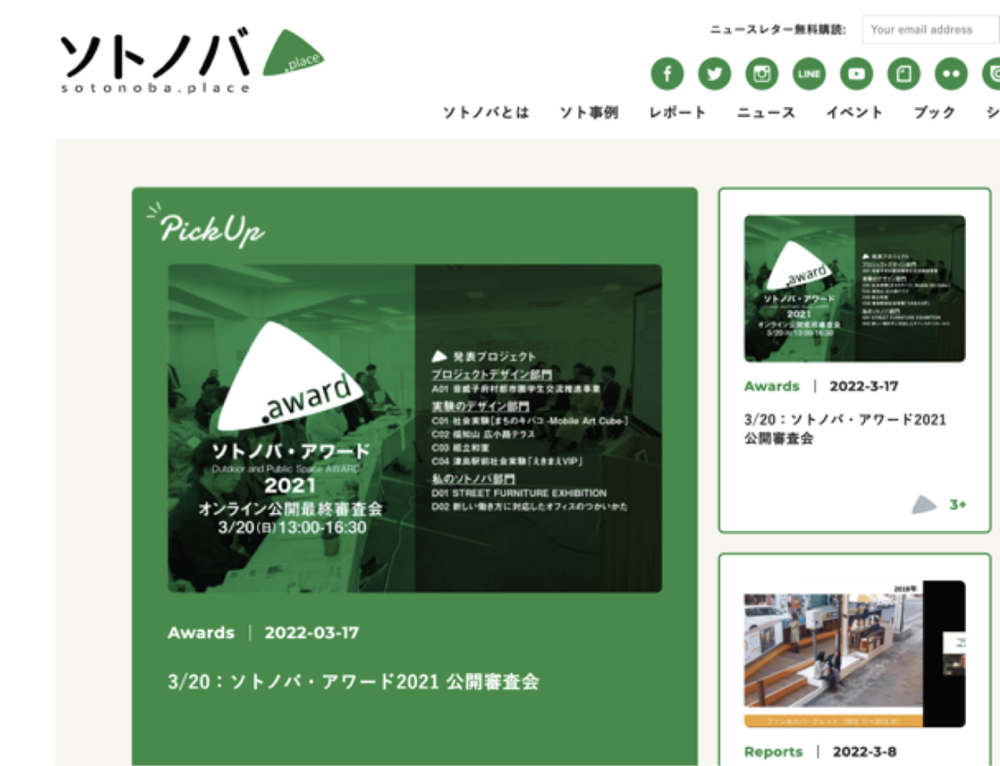

TORANOMON HILLS PROJECT
虎ノ門ヒルズ森タワーの南北に位置する、2つの都市再生・再開発プロジェクトに従事。主にレジデンシャルタワーの都市計画や環境アセスメントを担当。 都市計画提案後は、住宅の商品企画・管理企画、販売プロモーションWEBサイト・動画制作・PR等のディレクション、棟内店舗区画のカフェとクリニックの2施設の設計・施工に係るプロジェクトマネジメントを担当。 10年超に渡る大規模再開発プロジェクトの立上げから竣工までの一連に関わる。
都市再生・開発計画（都市計画・商品企画・管理計画・施設企画） 調査分析・コンセプトメイキング・企画・計画書作成 ｜ 2011-2022
PR -Town Managment

開発施設で行われるイベントのPR業務を担当。毎週1本以上のプレスリリース配信を行いながら、日々の取材調整・対応や、プロカメラマンの手配・記録撮影ディレクションなどを担当し、常に現場を走り回る。大規模イベント時のPR企画・計画なども行う。
タウンマネジメント コミュニケーション企画 ｜ 2015-2018
PROMOTION -Town Managment

六本木ヒルズ年間最大級のイベント「六本木ヒルズクリスマス」のプロモーションのトータルディレクションを担当。デザイナーによるクリエイティブ、街や館内全体の様々な装飾、ガイドブック制作、駅構内・電車内広告などのディレクション、1年後に手紙が届く「wish a wish」のイベント企画、PR（リリース配信・取材対応）などを担当。
タウンマネジメント 編集・コミュニケーション企画 ｜ 2015
HILLS BREAKFAST
月1回、ヒルズを舞台に開催する朝のトークイベント。イベント運営計画や登壇者への依頼などを担当。毎月4〜5名、次の未来を考えるきっかけとなりそうなオリジナルな活動をされている登壇者をリサーチ。オフィスワーカー等のボランティアスタッフと共同し、会場設営から現場運営までトータルに担当。
タウンマネジメント イベント企画 ｜ 2016-2018
研究活動 -都市再生・都市開発・都市計画・市街地整備等
大学・大学院にて、地区計画や都市開発の観点から都市計画や市街地整備をテーマとし、修士論文では、都市開発と公共空間との空間的連携性・関係性を研究。社会人では業務傍ら研究を続け、2019年から日本大学理工学部理工学研究所の客員研究員に所属。都市再生や都市開発において、これまでの敷地単体を再有効利用した大規模再開発のみではなく、周辺の地域社会を含めたエリアとの関係性を探求し、これからの都市開発のあり方の研究に取り組む。
都市調査・研究 研究企画・実施 ｜ 2008-
パブリックライフ研究会
旧・公共空間の『質』研究部会（国土政策研究会）の「公共空間評価指標研究会」から、2024年からJ-SURP（日本都市計画家協会）へ移行し、「パブリックライフ研究会」として活動を展開。初回からメンバーとして参加。感性・感覚を言語化・反映し、質的な評価方法や評価指標を開発することを目的に始まる。研究会の主な活動として、当評価指標を用いた「まちなか広場賞」の表彰事業を行う（2015-19）。公共空間の利活用等、わが国でも認知・普及が進み、研究会として関心をより広範に広げて、各地の視察や意見交換等などを行う。
都市調査・研究 研究企画・実施 ｜ 2014-（＊2015-2018不参加）
ソトノバ
公共空間に関する関心が高まりつつある中、国外・国内のパブリックスペースに関する情報発信を行うWEBマガジン「ソトノバ（sotonoba.place）」を立ち上げる。立ち上げ当時、副編集長として、メディア立ち上げからコンセプト、クリエィティブ、記事制作方針などの検討を行う。
プロジェクト発起 プロジェクトメイキング・メディア立上げ・編集・取材・ライティング 2015-2016（＊PJ関与終了・PJ自体は継続中）